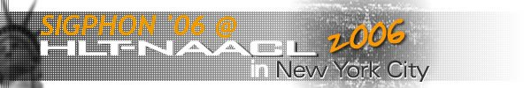
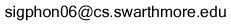

|  | |
|
Call for Papers Submission Format Online submissions |
Call for Papers
HLT-NAACL 2006
Eighth Meeting of the
ACL Special Interest Group
in Computational Phonology
New York City, NY, USA
June 8, 2006
Workshop Description and Motivation
-----------------------------------
Eighth Meeting of the ACL Special Interest Group in Computational Phonology
The workshop will be devoted to all areas of computation, as applied
to contemporary phonology and morphology. Papers will be on
substantial, original, and unpublished research on any aspect of
computational phonology and computational morphology.
Preference will be given to high-quality papers which address the role
of computational morphology and phonology in NLP. In particular, we
are looking for work which shows how (or if) morphology and phonology
are useful in larger problems such as machine translation, speech
recognition, OCR, or sentence-level parsing.
Other topics include, but are not limited to, those listed below,
focusing on recent developments since our last meeting at ACL
(Barcelona) in 2004.
* Speech technologies relating to phonology
* Unsupervised learning of phonotactics, morphology, and phonology
* Stochastic or probabilistic phonology
* Computational evolutionary modeling of phonological systems
* Language-independent learning algorithms relating to computational phonology
* Finite-state formalizations of phonology
* Computational morphology and morphological modeling
* Speech generation
* Assistive learning tools for second language speakers
One of the missions of SIGPHON is to encourage interaction between
work in computational linguistics and work in theoretical phonology,
in the hope that both fields profit from the interaction. In
addition, SIGPHON continues to promote work in computational
morphology, seeking to fill in for the absence of an analogous
SIGMORPH group. Our recent meetings have been successful in both
regards, and we hope to see this continue in 2006. Many mainstream
phonologists are employing computational tools and models that are of
considerable interest to computational linguists more generally, and
our intention is that this workshop should be a forum to bring this
work to the attention of a wider range of computational linguists.
This workshop will be the eighth meeting of SIGPHON, the ACL Special
Interest Group in Computational Phonology. We will hold a full-day
workshop consisting of approximately 12 half-hour presentations plus
an invited speaker.
The principal goal of the workshop is to bring together researchers in
the area of computational phonology. Computational phonology is an
important and recognized subfield of computational linguistics, but has
received little attention at recent ACL meetings. We expect the workshop
to facilitate interactions among computational phonologists who are
attending ACL, and to attract more attendance by computational
phonologists.
The workshop will be held on June 8, immediately after the HLT-NAACL
2006 meetings in New York City.
The workshop website is: http://nlp.cs.swarthmore.edu/sigphon06/
The SIGPHON website is: http://nlp.cs.swarthmore.edu/sigphon/
The HLT-NAACL 2006 website is: http://nlp.cs.nyu.edu/hlt-naacl06/
Organizers and Program Committee
--------------------------------
SIGPHON has sponsored seven previous workshops, most recently
co-located with ACL in Barcelona is 2004, and including Philadelphia
(ACL) in 2002, Luxembourg (COLING) in 2000, and Montreal (ACL) in
1998.
The members of the SIGPHON Executive Committee have a wide range of
research experience, covering not only computational phonology and
morphology, but also related areas such as phonological field work,
phonetics, statistics, psycholinguistics, and engineering. They are:
Paul Boersma, University of Amsterdam (paul.boersma@uva.nl)
Julie Carson-Berndsen, University College Dublin (julie.berndsen@ucd.ie)
John Coleman, University of Oxford (john.coleman@phon.ox.ac.uk)
Jason Eisner, The Johns Hopkins University (jason@cs.jhu.edu)
John Goldsmith, University of Chicago (ja-goldsmith@uchicago.edu)
Richard Wicentowski, Swarthmore College (richardw@cs.swarthmore.edu)
The organizers will be Richard Wicentowski and Grzegorz Kondrak
(kondrak@cs.ualberta.ca).
The Executive Committee will appoint a program committee that will be
responsible for selection of the papers. The program chair may invite
additional reviewers as necessary to obtain relevant expertise and
avoid conflicts of interest.
The program committee will consist of all members of the executive
plus, and the following individuals:
Adam Albright, University of California at Santa Cruz
Anja Belz, University of Brighton
Steven Bird, University of Melbourne
Mathias Creutz, Helsinki University of Technology
Sharon Goldwater, Brown University
Lauri Karttunen, Palo Alto Research Center
Mike Maxwell, Linguistic Data Consortium
Kemal Oflazer, Sabanci University
Gerald Penn, University of Toronto
Vito Pirrelli, I. di Linguistica Computazionale
Richard Sproat, University of Illinois at Urbana-Champaign
Important Dates
---------------
* **Extended** Submission Deadline: March 20, 2006
* Notification: April 3, 2006
* Camera-ready Copy Due: April 21, 2006
* Workshop: June 8, 2006
Paper Submission
----------------
Content: Papers should be original, topical, and clear. Completed work
is preferable to intended work, but in any event the paper should clearly
indicate the state of completion of the reported results.
Dual Submission: Papers which are submitted to the ACL 2006 general
conference may not be also submitted to SIGPHON 2006.
Length: Submissions should be full-length papers, up to a maximum of 8
pages. (The final version in the proceedings should incorporate
reviewers' suggestions and may be up to 10 pages.) High-quality short
papers of 4 to 5 pages will also be considered.
Layout: Except for length, papers must conform to HLT-NAACL 2006
formatting guidelines, available at http://nlp.cs.nyu.edu/hlt-naacl06/
Electronic Submission: All submissions will be electronic. Reviews
will be blind, so be careful not to disclose authorship or
affiliation. PDF submissions are preferred over PostScript
submissions and will be required for the final camera-ready copy.
Submissions should be sent as an attachment to
sigphon06@cs.swarthmore.edu. Please be sure to include accurate
contact information in the body of the email.
|
|
Please e-mail questions to . Website hosted by the Department of Computer Science at Swarthmore College. |
|